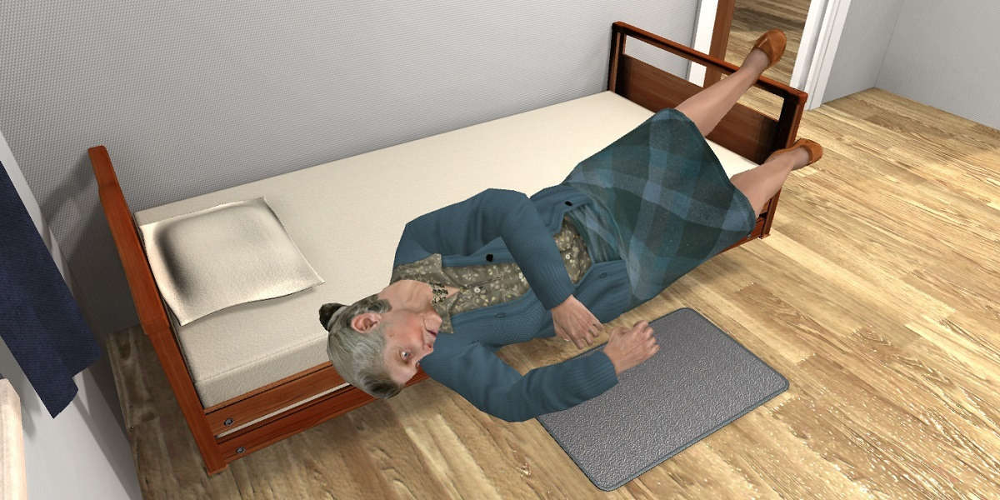

It is widely acknowledged that language proficiency is key for a common understanding between the EU citizens and for the practice of shared cultural values. However, recent studies demonstrate that we still have a long way to go until ICT gets truly integrated into the work of the European foreign language teachers. According to surveys, the availability of ICT facilities in the foreign language classrooms of European schools is extremely low. But even a greater barrier to spreading the best practices in technology-assisted language learning is the level of teachers’ digital literacy, which is a challenge for Higher Education. Above 70 percent of the language teachers in Europe do not consider themselves ‘digitally confident’ or able to teach their students using ICT instruments effectively. In order to improve the uptake of ICT tools in foreign language teaching, the educators’ digital skills need to be regularly upgraded. Moreover, there needs to be a clear distinction between the ICT skills that teachers use in regular classrooms and those that are required for teaching languages online, as online tutoring becomes increasingly popular. This new educational reality requires novel pedagogies and open learning environments, open educational resources, and open adult training environments.
In this context, DC4LT project aims at improving digital literacy and empowering language teachers of all levels (HE, VET, Schools, AE, private language institutions, entrepreneurs) to use ICT instruments in their practice. To achieve this goal, the project will explore how teachers are prepared to the integration of information technologies in their pedagogical work, what skills they need in order to better support their online courses, and in what ways they can help their students’ in the language learning process. Then, based on the collected primary data, the consortium will develop a self-sustained Open Internet Community of Practice for language teachers / online tutors, which will help to continuously enhance their digital competences as well as their knowledge of the design and delivery of online and blended courses. Large numbers of language teachers will be invited to participate in the DC4LT training workshops and provided with an opportunity to collaborate with peers in an interactive educational process, spreading the excellence. This will allow many European language teachers improve the efficiency of their teaching practice, secure better employment and entrepreneurship opportunities, and offer their services to more students via ICT instruments. It is envisaged that more than 1500 language teachers/trainers from all levels of education institutions from public and private sector across Europe will initially benefit from the activities of the DC4LT project.
The DC4LT project will be carried out by an international consortium composed of five partners: the Norwegian University of Science and Technology (NO), University of Macedonia (GR), PIXEL (IT), Cyprus University of Technology (CY) and ITMO University (RU). All partners have a vast experience in technology-assisted language learning, development of open educational resources, learning analytics tools, mobile adaptive / personalized and collaborative learning and assessment.
The partners will implement the project in four macro-phases: (1) Preparation, including setup and a pre-study, (2) Development of methods and content, applying expertise and pre-study results, (3) Delivering training and updating content based on the feedback and (4) Sustainability and finalization. Within the lifetime of 36 months, the project will develop and offer to the European Higher Education and other stakeholders the following tools and services:
The results of the project will be delivered at three teacher training workshops, as well as widely disseminated via the project website, social media, one European, one international and three local multiplier events and multiple other means.
Reaching the ambitious objectives of the project will have a strong impact on the quality of language teaching in European Higher Education and other sectors. The impact of the project will be strengthened by delivering a replicable model of the training program for digital competences and by targeting the multipliers of knowledge.
Oct 2017–Aug 2020: Augmented Reality in Formal University Education (AR-FOR-EU)The Augmented Reality in Formal European University Education (AR-FOR-EU) project established a strategic partnership for teaching Augmented Reality in Higher Education at scale on an undergraduate and graduate levels. AR-FOR-EU brought together five internationally renowned institutions to reflect their research, development and teaching expertise into a validated course offer of excellence, extended with rich and professionally produced open course materials.
AR-FOR-EU helps improve the quality of educational programs by creating a new offer in an area conducive to Europe’s global competitiveness, with technology uptake already showing positive effects in a variety of industrial fields. The project has collected expertise at the European and international level to create a foundation for teaching Augmented Reality in formal education, preparing professionals for the industries of tomorrow and contributing to making European economies more research-driven, knowledge-based, and competitive.
Augmented Reality is a rapidly growing market amongst the information and communication technologies. It provides an enriched view onto the physical world, adding layers with contextually useful information, delivered visually or by stimulating other senses using wearable and hand-held devices. The technology is currently being introduced in front-runner organisations at large, leading to an increasing demand for qualified specialists.
AR-FOR-EU set its objectives as (1) to support capacity building of digital skills for Augmented Reality, (2) produce two courses on this topic, (3) create a strategic partnership to promote excellence in teaching, and (4) design technology-based and pedagogically sound digital Open Educational Resources and online courses aimed at opening up and fostering uptake across Europe.
The major results of AR-FOR-EU include an analytical report “Existing Teaching Practices and Future Labour Market Needs in the Field of AR” and a Model Augmented Reality Curriculum with a skills framework and a course design. The results also included educational materials on the topic of Augmented Reality, produced in the form of The Open Augmented reality Teaching Book with dozens of chapters covering 21 key topics, tutorials and practical exercises, and 45 educational videos. All these materials are made in digital formats and structured into two courses Foundations of Augmented Reality and Advanced Augmented Reality. Both these courses were successfully piloted in two cycles during the project.
The project communicated with several target groups. In particular, our industry survey reached participants through our partners’ professional networks with 76 complete responses. We attracted 11 members to the Model Curriculum working group. The open teaching book community consists of 26 professionals, with nine regular contributors. Our teacher training workshop attracted 22 participants. On social media, the project created a base of followers and subscribers: 185 on Twitter, 261 on Facebook, and 192 on YouTube. The most popular posts reach tens of thousands users.
The AR Foundations online course had 230 students enrolled and 20 receiving completion achievement certificates. The AR Advanced online course had 87 students enrolled.
We conducted three public events that reached participants internationally. Augmented Reality Skills Summit was held in 2018 in Brussels and reached 43 externals including EU policy makers. Code Reality at the EVA London Conference of the British Computer Society was an online event held on a new interactive platform Sparkleverse. It reached 59 external participants. The Augmented Reality Education Global Webinar was held online and included a keynote, an expert panel discussion, and presentations of the major project results. The event was attended by 131 external participants. These events focused on dissemination of project results and enabled us to reach our target audiences for the pre-study survey, co-authors of the textbook, learners and volunteers for the pilots, to create multipliers of the knowledge generated, and to create a source of valuable feedback.
AR-FOR-EU impact is strongest at the global level, while also providing benefits to society and the economy on local, regional and national levels. Through intensive cross-border and inter-disciplinary cooperation, the project has triggered processes and produced results that became self-sustaining and are likely to develop further. The project has an impact on the development of advanced technical skills, creative and transversal skills among students, teachers and researchers, with a life-long value in the settings of continuously changing workplaces and societal challenges. The future work includes the establishment of a formal professional society, further development and update of the model curriculum, sustaining the teacher community with events, and cooperation in improving and updating the open educational resources.
Jan 2016–Dec 2017: Active Learning Module for Emergency Management Professionals using VRIn this project, we will focus on how Virtual Reality technology could support cooperative learning within the field of Emergency management training, in a crossprofessional context. The simulated environment with game-based elements will provide an engaging learning experience and faclilitate reflection on problem-solving under critical conditions as well as reflection on team interaction and procedures in emergency settings. After roleplay sessions, the students will be able to discuss their experiences within the student group and with experts/teachers, in both co-located and distributed modes.
Dec 2015–Nov 2018: Wearable Experience for Knowledge Intensive Training (WEKIT)The project objectives are to build on multi-discipline research (e.g., human-centred methodology integrates cognitive models, ergonomics, understanding of worker’s well being) to accelerate how we identify, acquire and exploit skills valued by industry. Get high take-up by early adopters (e.g., in manufacturing). Augment training in situ with live expert guidance, a tacit learning experience and a re-enactment of the expert, in knowledge-intensive environments where effective decision making, often in new situations, has high impact on effectiveness in production. Bring learning content and technical documentation to life via task-sensitive Augmented Reality (AR). Make final products flexible for workplace integration via industry-standard repositories and toolkits.
Nov 2015–June 2016: Virtual Education for Norwegian Welfare technology
The main objective of the project is to develop a pilot virtual reality simulation of welfare technology. The major purposes of the simulation include training of welfare employees and demonstration of welfare technology for different target groups.
2011–2012: Cultural Awareness in Military Operations (CAMO)
Cultural Awareness in Military Operations (CAMO) is a research project led by the Norwegian Armed Forces in cooperation with NTNU and University in Oslo. The project has two goals: first – gaining first-hand experience of educational use (opportunities, applications, and limitations) of the 3D virtual worlds within the framework of military operations; and second – building internal expertise in terms of a larger effort in the future.
2009–Now: vAcedemia 
This virtual world is designed and developed specially for educational purposes, and it has an integrated set of tools for a number of learning activities. The main original feature of vAcademia is 3D session recording, which allows to capture dynamically everything in a given location in the virtual world, including positions of the objects, appearance and movement of the avatars, contents on the interactive boards, text and voice chat messages. Recorded sessions are stored on the server and available for watching in a 3D or a 2D-preview format.
2010–2013 Enabling Creative Collaboration through Supportive Technologies (CoCreat) 
Enabling Creative Collaboration through Supportive Technologies (CoCreat) is a project, supported by the European Commission under the Life Long Learning programme. The project identified a number of problems in the society (e.g. technological environments, learning landscapes (ecosystems) and interaction between different generations) and the evidence in research that there is a need for a range of new learning practices in complex and dynamic learning environments in order to tackle these problems. The aim of this project is to find out how to enhance creative collaboration by applying the theory of collaborative learning. The outcome of the project will be increased competence in acting and learning in complex and dynamic environments where collaboration and creative solutions of problems are required.

Virtual Research Arena (VRA) at the Virtual Campus of NTNU is a meeting place for researchers, students and public; a place for visualizing and promoting research projects. Virtual Research Arena was presented both virtually and in real life during the annual Norwegian Science Week festival in September 2010.

The First TARGET International Summer School on Technology Enhanced Learning, Serious Games and Collaborative Technologies was conducted in the Virtual Campus of NTNU in Second Life in the autumn 2010. The main aim of the TARGET project is to develop a new genre of technology-enhanced learning environment that supports rapid competence development, and the two domains of innovation and project management have been selected as pilot areas.

Virtual Campus of NTNU is a place for educational and social activities in a 3D environment; a source of information about the university. It is a joint project created in cooperation between the Program for learning with ICT (LIKT), NTNU Library (UBIT) and the Department of Computer and Information Science (IDI).

Travel in Europe (TiE) is a virtual world where young people and the curious can enjoy challenging and engaging travels through European heritage. It is a joint EU project created in cooperation between ELIOS Research Group, University of Genova, Italy, Program for learning with ICT (LIKT), Norwegian University of Science and Technology (NTNU) and other organizations.

Virtual City of Yoshkar-Ola (VCYO) – a multi-user virtual world that represents the central part of the real city in exact manner. It supports local social networks in a natural environment for meeting and communication. It is a research project with an open prototype created by Multimedial Systems Lab (http://www.mmlab.ru/) at the Volga State University of Technology, Russia. Few studies were performed in cooperation with Norwegian University of Science and Technology (NTNU) in 2008-2009.